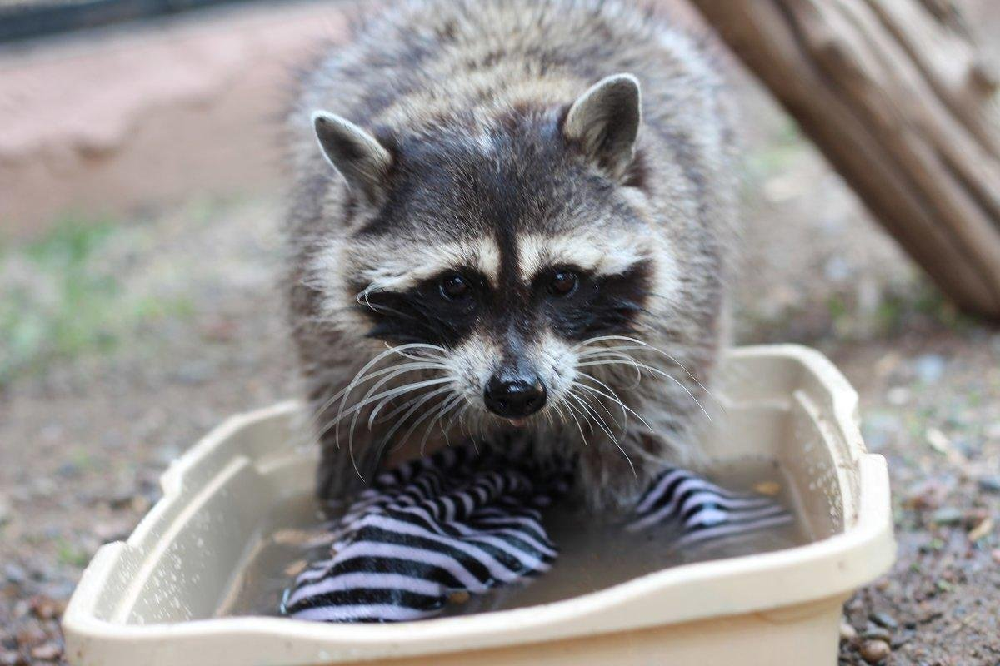
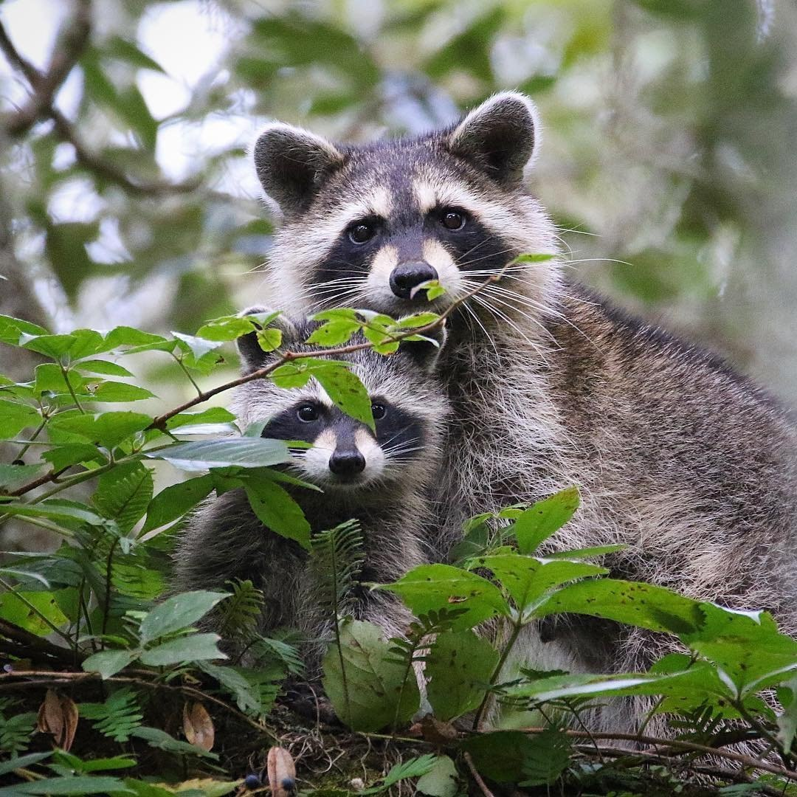

Енот-полоскун или американский енот (Procyon lotor) Класс — млекопитающие Отряд — хищные Семейство — енотовых Род - еноты Внешний вид Енот-полоскун размером со среднюю собаку. Длина тела енотов достигает до 60 см, из них длина хвоста до 25 см, вес до 15 кг. Но в среднем 5-9 кг. Телосложение плотное, коренастое; лапы короткие, с настолько развитыми пальцами, что следы напоминают отпечаток человеческой ладони. Голова широкая с короткой заострённой мордой и округлыми ушами. Мех у енота густой, коричневато-серый. По бокам головы он несколько длиннее и образует «баки». На морде характерная маска — чёрная с белой оторочкой. На хвосте 5—10 широких чёрных или бурых «колец». Ареал обитания Полоскун - житель Северной, Центральной и Южной Америки. На Европейский континент это зверь завезен в 30х гг прошлого века. Хорошо акклиматизировался в Европе и быстро распространился по Германии, Франции и даже на юге России. В природе До того как этот зверь обосновался у нас, в России енота знали по привозным из Северной Америки шкуркам. Их называли "генеттовыми мехами". Уж больно зверек напоминал генетту (хищника семейства вивверовых). Далее из генеттового меха он превратился в "генот", а потом укрепилось название зверя - енот. Приставку "полоскун" енот получил от своей привычки перед употреблением, полоскать еду. По методу хождения енот напоминает медведей: передвигается он на подошвах лап. Не смотря на свой вес, еноты очень ловко карабкаются по деревьям и большую часть жизни проводят на деревьях. Еноты - животные всеядные. Их зубы скорее приспособлены к перетиранию пищи, чем к разрезанию. Основу питания составляет растительная пища: орехи, ягоды, кукуруза. В сезон еноты могут полакомиться насекомыми, дождевыми червями, улитками, раками, лягушками, а так же разорять птичьи гнезда, если в них есть яйца или птенцы. Как и у всех животных, чей рацион в основном состоит из растительной пищи, у енотов длина кишечника сильно превышает длину тела, примерно в 9-10 раз (как у медведя). Уборную еноты устраивают на толстых валежинах, в развилинах сучьев на деревьях или в мелких дуплах. Образ жизни: активен в основном в сумерки и ночью, зимой сокращает свою деятельность, однако в зимнюю спячку не впадает. При поисках пищи важную роль играет осязание. Енот - очень жизнестойкий зверь. Он невосприимчив ко многим инфекционным и инвазионным заболеваниям и активно защищается от хищников. Даже трехмесячные зверьки, попав в безвыходное положение, делают броски в сторону человека, рычат и пытаются укусить. Размножение Полового созревания самки достигают примерно в год, самцы ко второму году жизни. Спаривание у енотов происходит с января по март. Беременность длиться 63 дня и самки рожают по 3-4 детеныша. Молоком самка кормит енотиков примерно 7 недель. Самостоятельными еноты становятся только к 6 месяцам. Приплод бывает один раз в год. Содержание в неволе Первые опыты по разведению енота в нашей стране были в 1936 году. Если вы хотите завести енота, то как и любого дикого животного, их следует брать еще в детском возрасте, примерно в возрасте 6-8 недель. Молодые еноты неплохо приручаются. Чем старше животное вы берете, тем сложнее оно будет привыкать к вам. Еноты - животные социальные и прекрасно уживаются друг с другом в детстве. После наступления полового созревания, у енотов начинают проявляться инстинкты. Енот-полоскун - грязнуля. Ему необходим постоянный доступ к воде, особенно если это вода проточная. Помимо игр с водой, им необходимо полоскать "добычу" в воде (за что в России и получили забавную приставку "полоскун"). Однако, не смотря на такое поведение, еноты достаточно внимательны к собственной гигиене. Поведение енота-полоскуна в доме достаточно бесцеремонно. Он будет пытаться передвинуть и залезть везде, что попадается на его глаза: любая дверь, щель, шкаф, укромный уголок. Еноты не понимают слова "нет". Поэтому, если ему что-нибудь понадобилось, то бесполезно это убирать и прятать. Еноты не любят когда их отрывают от земли. В случае опасности еноты притворяются мертвыми. Для содержания енота-полоскуна в городской квартире, ему необходимо подготовить специально оборудованное под него вольер, где будут: спальное место с кучей тряпочек, туалет, дерево для лазания. Енот-полоскун - животное любопытное. Им интересно содержимое всего, куда можно запрятать еду. Еноты могут легко балансировать на двери или забираться на шкаф в поисках новых укромных мест. Все двери в зоне доступа енота должны быть надежно заперты: холодильник, платяные и книжные шкафы и т.д. Идеально содержание енота в вольере, на улице. При воспитании енотов следует помнить, что как к любому дикому животному, к ним категорически нельзя применять физические меры наказания. Попытку наказать енот может принять за нападение и отреагировать соответствующе. Енотов категорически не рекомендуется держать дома с птицами. В природе птицы являются их естественной добычей. Не желательно кормить енота собачьими и кошачьими кормами. Лучше, если его рацион будет приближен к натуральному (фрукты, зерно, орехи, яйца, насекомые, птицы и грызуны, рыба, лягушки). В дикой природе еноты живут 6-8 лет. В домашних условиях до 15 лет. Известны случаи, когда еноты доживали до 22 лет.
 